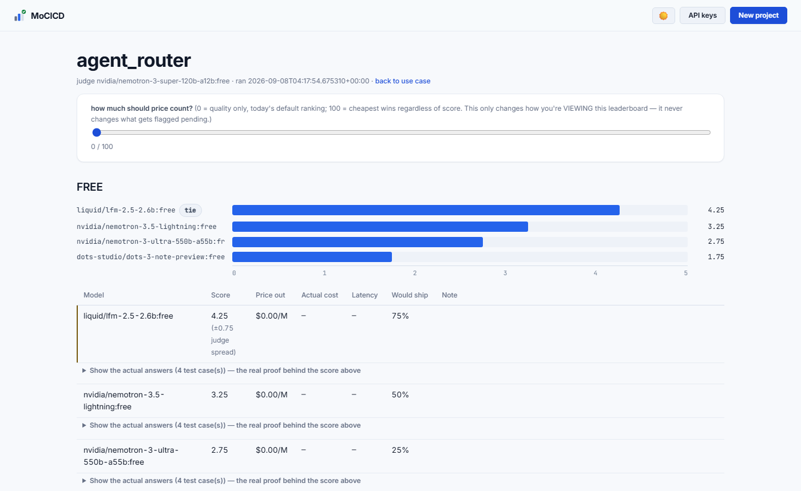

A self-hosted evaluation harness — for every place your application calls an LLM.
MoCICD continuously discovers new LLMs, benchmarks each one against your own feature's test cases and rubric, and never changes what your application uses in production until a human explicitly says yes.
from modelcicd.resolver import resolve model = resolve("support_bot_reply", fallback="gpt-4o-mini") # call your existing LLM client with `model`, exactly as before
Listing 1. The entire integration surface. Everything else in the repo exists to answer one question well: which model id should this line return?
You overpay without knowing it. The model you picked eight months ago is still what your app calls — even though three cheaper ones now match it.
A score moving doesn't tell you why. A prompt edit and an actual model regression look identical on a bare trend line, unless something is tracking what changed.
Checking is the part nobody has time for. The only way to find out if something better exists is a person manually re-running the comparison — so it doesn't happen.
Everything up to a decision happens on its own, on whatever schedule you choose. The moment your application's actual behavior would change, it stops and asks a person.
| Step | What it does | Cost |
|---|---|---|
01 · catalogue.py |
Polls every model and its price, right now — not whatever was true when you last looked. | free |
02 · guardrails.py |
Filters by this feature's own price ceiling, context length, JSON-mode need, and modality. | free |
03 · sandbox.py |
Runs every surviving candidate against this feature's own test cases — one real call each. | $ · timed |
04 · judge.py |
A separate, pinned model scores every answer against your rubric, blind — never told which model wrote it. | $ |
05 · rank.py |
Leaderboard within price tiers, so “good enough for 10× less” is a visible, defensible answer. | free |
06 · state.py |
A candidate that clearly beats what's approved is marked pending. Production hasn't changed yet. | free |
| 07 · you | The one human click that promotes a model. Only after this does your app's resolve() call return the new id. |
manual |
Real answer, real judge reasoning, real price, real cost, real latency — saved with a timestamp, per candidate, per test case. Nothing is chart-only.

Once a bench has run, MoCICD can try to close the gap between the cheapest tier's best candidate and the run's overall winner — not by training anything, but by rewriting the prompt.
The winner's answers become the teaching material. Its real outputs, and the judge's own stated reasons for scoring them well, are handed to a model that rewrites the cheap candidate's prompt around them.
The cheap model is re-run and re-scored, blind, against the same rubric. If it falls short, its own attempt and where the judge marked it down feed the next rewrite — a bounded, self-refining loop, not a single guess.
It never touches production on its own.
modelcicd optimize saves its own record next to a
run's leaderboard. resolve() and every approved
model stay exactly as they were — using the result for real
still means deliberately editing the prompt yourself.
resolve() keeps returning the old model until a human
approves. Patching real source code is a second, separate confirmation.Everything above benchmarks one call: one prompt in, one judged answer out. An agent is a loop — it can call a tool, read the result, call the model again, and keep going before it produces a final answer. That needs a different kind of run, not a config flag.
The sandbox runs the whole loop. One test case means the agent's full sequence of tool calls, not one request — then the judge scores the final answer. planned
Checks on the trace, not just the reply. Did it call the right tool? Stop within a reasonable number of steps? A different kind of assertion than checking one JSON response. planned
Cost and latency already generalize. They're summed per call today — an agent run just means summing across every call the loop makes instead of one. mostly there
Everything runs locally. The only command that spends anything is
run — and it shows the cost and asks first.
examples/.# 1. install python -m venv .venv source .venv/bin/activate pip install -r requirements.txt # 2. configure cp .env.example .env # set OPENROUTER_API_KEY, or add it later # from the dashboard # 3. write a use case python -m modelcicd.cli init \ --out feature.yaml # 4. free preview — no model calls yet python -m modelcicd.cli shortlist \ --use-case feature.yaml # 5. run the bench — shows cost, asks first python -m modelcicd.cli run \ --use-case feature.yaml # 6. approve, or open the dashboard python -m modelcicd.cli approve \ --use-case feature.yaml python -m modelcicd.cli ui
Free, self-hosted, and the whole integration surface is one function call. Everything else in the repo exists to answer one question well.